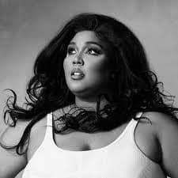

Música Pop
Blank Space - Taylor Swift
Demi Lovato Rindo
Lizzo
Lizzo recebeu oito indicações no 62º Grammy Awards, recebendo o maior número de nomeações naquele ano, incluindo Álbum do Ano para a versão deluxe de Cuz I Love You, Canção do Ano e Gravação do Ano por "Truth Hurts", além de Artista Revelação.
